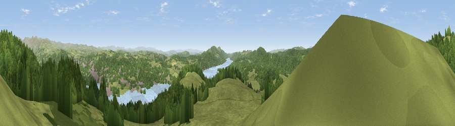

Viewpoint near Far Sawrey
#2218 in England · top 14% of its area beats it · near Far SawreyThe view, rendered

A 360° render of this exact spot computed from the terrain model, tree cover and land cover — summer colours, afternoon light, calibrated against photographs of famous viewpoints. Real trees, hedges and buildings will differ in detail.
The panorama
Grey silhouette: terrain skyline in each direction (720 bearings, Earth curvature and refraction included). Dashed green: skyline with trees (+15 m) and buildings (+8 m) as obstacles. Blue strip: how far the ground is visible on each bearing.
Where the view opens
Wedge length = distance to the farthest visible ground on that bearing (vegetation-aware). Rings at 10, 25 and 50 km.
What fills the view
46% grassland · 44% woodland · 8% water · 2% built-up
Angular shares of the visible panorama (visual magnitude), not map area. Landscape diversity 0.43 (0–1 Shannon).
Key numbers
More beautiful places nearby
The staircase of upgrades: each row has a higher view potential than everything closer. Driving times are estimates from straight-line distance, calibrated against real road routing — check an actual route before setting out.
| Place | Direction | Drive | Score |
|---|---|---|---|
| Claife Heights | N · 1 km | ~3 min | 79.0 |
| Viewpoint near Finsthwaite | S · 8 km | ~15 min | 84.7 |
| Viewpoint near Finsthwaite | S · 8 km | ~16 min | 90.3 |
| The Knoll | S · 409 km | ~389 min | 91.0 |
54.35958, -2.95347 · source: screening · position refined by local search. Computed location — check access rights before visiting.